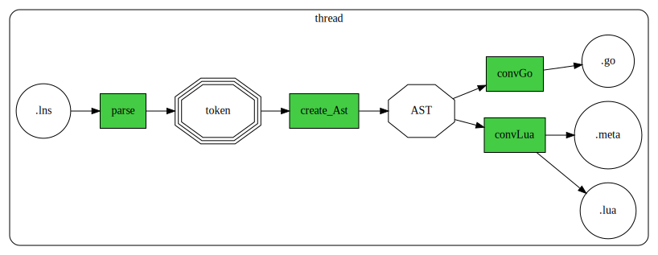
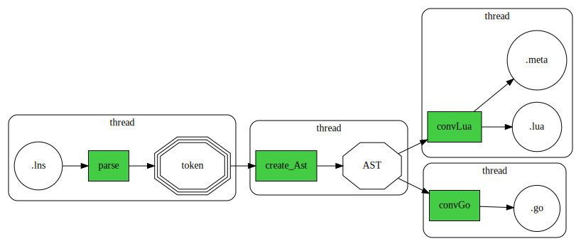

LuneScript のセルフホストのマルチスレッド化 (トランスコンパイル時間を 1412 パーセント改善)
LuneScript の高速化のため、マルチスレッド化を行ないました。
今回は、LuneScript のどこをマルチスレッド化したのか、 マルチスレッド化で何故高速化できるのかを説明します。
ビルド時間
今回の時間短縮は以下の通りです。
| lua VM 版 | go ビルド版 | lua/go | |
|---|---|---|---|
| 改善前 5/6 (6e5661a9) | 25.69 sec | 5.84 sec | 440% |
| 改善後 5/25 (364095ef) | 17.42 sec | 2.22 sec | 785% |
| 改善後2 6/7(52df422b) | 17.57 sec | 1.82 sec | 965% |
| 改善率(改善前/改善後2) | 146% | 329% |
この表は、セルフホスティングしているソースのトランスコンパイル時間の計測結果を 示しています。 lua VM で動作させた lnsc と、go でビルドした lnsc で計測しています。
改善前の 6e5661a9 は、2021/5/6 のバージョンです。 改善後2 の 52df422b は、2021/6/7 のバージョンです。
この表の通り、 改善前の Lua と、改善後 go のトランスコンパイル時間を比べると (/ 25.69 1.82 ) 14.115384615384615 ≒ 1412% 改善しています。
改善後2 の lua と go の比較では 965%、 改善前と改善後2 の go の時間を比べると、 329% 改善しています。
前回からさらに並列度を上げています。
LuneScript の処理フロー
LuneScript は次の処理を行ないます。
- .lns ファイルの parse
- AST の構築
- AST から .lua, .meta の生成
- AST から .go の生成
図にすると、以下のようになります。

ここで、色が付いているのが処理で、色の無いのが処理の入出力データです。
上記の処理を、各ファイルに対して行ないます。
マルチスレッド化
マルチスレッド化した LuneScript の処理は次です。

各処理をスレッド化しています。
このマルチスレッド化により、以下の効果があります。
- parse と AST 解析を並列処理できる
- convLua と convGo を並列処理できる
複数ファイルを処理する場合は、さらに効果を発揮します。
複数ファイル処理時の効果
シングルスレッドで、複数ファイル(file1.lns, file2.lns, file3.lns) を処理すると、 次のようなイメージで処理されます。
| step1 | step2 | step3 | step4 | step5 | step6 | step7 | step8 | step9 | |
|---|---|---|---|---|---|---|---|---|---|
| file1.lns | parse | create_Ast | convLua | convGo | |||||
| file2.lns | parse | create_Ast | convLua | convGo | |||||
| file3.lns | parse |
時間軸: →→→→→→→→→→→→
これは LuneScript の処理を示す概念図で、 左から右に処理の step が進んでいることを示します。
一方、マルチスレッド化すると以下になります。
| step1 | step2 | step3 | step4 | step5 | |
|---|---|---|---|---|---|
| file1.lns | parse | create_Ast | convLua/Go | ||
| file2.lns | parse | create_Ast | convLua/Go | ||
| file3.lns | parse | create_Ast | convLua/Go |
シングルスレッドと比較して、かなり処理時間を短縮できていることが分かります。
なお、これはあくまでもイメージなので、 実際には綺麗に step で時間が区切られている訳ではありません。
また、先に処理を開始したファイルが処理終了するよりも前に、 後から処理を開始したファイルの処理が終る場合もあります。
マルチプロセスとの違い
ここまでの説明を読んで、以下を疑問に思っている人もいるでしょう。
「マルチスレッド化ではなく、make で並列ビルド(マルチプロセス処理)すれば良いじゃない？」
それはある意味で正しいですが、ある意味で間違いです。
マルチプロセスと比較すると、マルチスレッド対応は以下の効果があります。
- プロセス起動にかかるオーバーヘッドを削減できる
- 依存関係を効率的に対応できる
ここでいう依存関係とは、 『あるファイル A.lns が別のファイル B.lns をインポートしている』ことを指します。
この場合、 B.lns をビルドする際に、A.lns も解析する必要があります。
そして、A.lns と B.lns を make で並列に処理しようとしても、 その依存関係から B.lns は A.lns の後にビルドされることになります。
つまり依存関係がある場合、シングルスレッドで示した時と同じ動作になります。
マルチスレッド化の場合
ここで、以下を疑問に思っている人もいるでしょう。
「依存関係がある場合は、マルチスレッド化しても同じじゃないのか？」
これもある意味で正しいですが、ある意味で間違いです。
ここで、先ほどのマルチスレッドで A.lns と B.lns を処理するケース見てみます。
| step1 | step2 | step3 | step4 | |
|---|---|---|---|---|
| A.lns | parse | create_Ast | convLua/Go | |
| B.lns | parse | create_Ast | convLua/Go |
A.lns が B.lns をインポートしていても、 A.lns の処理が終る前に B.lns の解析が出来ています。
これが何故かというと、 step2 の A.lns の create_Ast によって A.lns の解析が終っているため、 step3 で B.lns の create_Ast が可能になります。
もちろん、A.lns の create_Ast に時間がかかれば、 その分 B.lns の create_Ast は待たされて時間が延びます。
しかし、 make などのマルチプロセスに比べれば、 明らかにマルチスレッド化の方が効果があります。
goroutine
セルフホストは 44 ファイル(約44KLine)で構成しています。
今回のマルチスレッド処理は、 golang 版のセルフホストで実現しています。
セルフホストの 44 ファイルをトランスコンパイルする際に 動作する goroutine 数を計測したところ、最大で 160 個が同意動作することが判った。
同時に動かす goroutine 数を制限する機能を実装し、 goroutine 数を少なくした場合どのように動作するのかを調べたところ、 以下の結果が得られた。
| goroutine 制限数 | ビルド時間 (sec) |
|---|---|
| 141 | 1.82 |
| 130 | 1.83 |
| 126 | 1.93 |
| 121 | 2.02 |
| 103 | 2.04 |
| 52 | 2.02 |
| 25 | 2.13 |
同時動作させる goroutine 数を少なくすほど、 ビルド時間が劣化することが確認できる。
ただし、goroutine 数をかなり少なくしても、 2割程度のパフォーマンス劣化で済んでいる。
セルフホストのコードは、芋蔓式の依存関係があるため、 goroutine 数を制限しても大きく代わらないのかもしれない。
最後に
LuneScript の高速化のため、マルチスレッド化を行ないました。
これにより、対応前と対応後とで比較すると倍以上の高速化を達成できました。
なお、マルチスレッド化にはデータ競合との戦いがつきものですが、 LuneScript ではデータ競合を論理的に排除する仕組みを組込みました。
これにより、楽に安全にマルチスレッド化を実現できました。
現状、全てのデータ競合を論理的に排除できる訳ではありませんが、 開発の楽さと安全性のバランスの取れたものになっていると思います。
少なくとも、今回、シングルスレッドだった LuneScript のセルフホストコードを マルチスレッド化するにあたって必要だった変更は、かなり少ない修正量で済みました。
github の Code frequency で変更量を見ると、かなり変更したように見えますが、 これはトランスコンパイルしたコードが変更になっているためです。
少しの .lns の変更で、トランスコンパイル結果が変ってしまう現象については、 今後改善していきます。
LuneScript のマルチスレッド化 syntax については、 後日整理してアップする予定です。